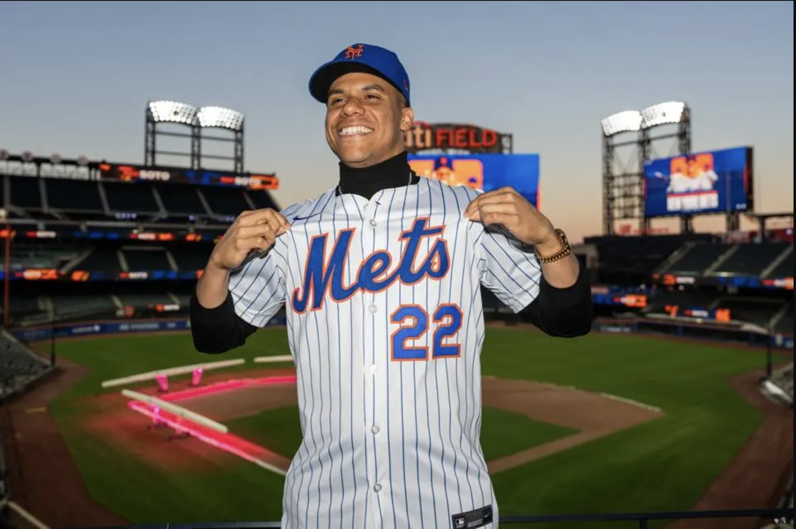

Three Reasons Juan Soto is destined for success with the New York Mets
2024 was Juan Soto’s best season yet. Here’s why he’ll have a better one across town in 2025.
This offseason, the MLB world witnessed one of the biggest moves in sports history when Juan Soto signed a 15-year, $765 million contract with the New York Mets. Soto, who spent 2024 with the New York Yankees and put up career numbers, shocked many by taking his talents across town to Queens.
At 26, Soto is viewed as one of the best players in baseball and a generational talent. In 2024, he was a catalyst behind the Yankees’ World Series run — where they lost to the Los Angeles Dodgers in five games — and provided many memorable moments along the way.
The Mets were the best location for him to begin with. Here’s a few reasons why Soto will be successful in Queens.
1. Soto's stellar 2024
In 2024 with the Yankees, Soto had the best year of his career dating back to 2019, when he won the World Series with the Washington Nationals. While the Yankees did not win it all, Soto is a major reason they had the success they did.
As seen below, in his one year with the Yankees, Soto had a career-high 41 home runs and was one short of tying his career-high in RBI. This puts him 4th and 6th in the MLB, respectively.
One of Soto’s best attributes is his plate discipline, and this was once again the case in 2024. His slugging percentage and on base percentage were both top five in baseball, putting him up there with Aaron Judge and Shohei Ohtani. If he is able to match his 2024 numbers, he'll make an immediate impact on the Mets.
2. Batting after Francisco Lindor
In 2024, Soto made up one of the best 1-2 punches in MLB with the American League MVP Aaron Judge. Combined, the two had 99 home runs, 253 RBI and both placed in the top five in the league in batting average and wins above replacement (WAR).
With the Mets, Soto will make up another one of the league's electric duos with Francisco Lindor. Lindor is coming off a career season where he had 33 home runs, 91 RBI and was second in National League MVP voting.
Statistically, besides Shohei Ohtani, there was nobody in the National League more valuable to their team than Lindor was with the Mets. Combine him with Soto, and the Mets are one of the most elite baseball teams.
Looking at 2024 WAR stats, Lindor and Soto were both top-10 in MLB in this category. Entering 2025, no other teammate combo can say the same. The two should add over 12 together if they stay healthy.
That's scary, especially for a team that was two wins away from the World Series.
3. Juan Soto is generational
There's not much data that can prove this point, but anyone that follows baseball knows that Juan Soto is a generational talent. At 26-years-old, he is a 4-time All Star, 3-time All-MLB First Team, five-time Silver Slugger and a World Series champion.
Even though it's a small sample size and it is spring training, Soto has already given Mets fans something to be excited for. He hit a home run in his first at-bat, and then on Friday against the Nationals, he hit another right after bobbing his head the pitch before.
Juan Soto will give the Mets and their fans something they haven't seen. Whether it's the elite plate discipline, slugging power, ability to perform in the clutch or just overall aura he brings, he makes the Mets a much better baseball team.
Soto is only entering the prime of his career and he's slated to get better. On a true World Series contender, he has the opportunity to win multiple championships and bring hope to a franchise that has not won a World Series since 1986.
Now, baseball fans have to wait to see how it all unfolds in Queens.